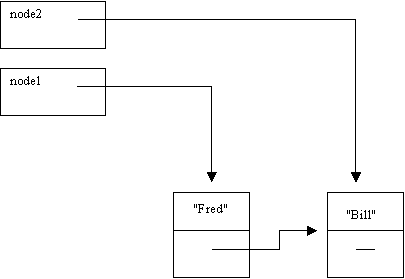

So far we have only really looked at static data structures, that is, a structure which is specified at the time that the program is written and which cannot then be changed. The contents can be changed of course but the structure remains stable. Arrays are an example of this. Even vectors are of fixed size – when they grow what actually happens is that a new larger vector is created and the contents of the original are copied into it.
Dynamic data structures may have their structure changed by the program. They may contract and expand in size as the program is executed. Unlike in many languages, to support dynamic data structures in Java we do not need to introduce any new constructs. We simply use object references.
A pointer is simply something that is used to point to something else. Typically when referring to pointers we use diagrammatic representations showing boxes and arrows. The arrows in the diagrams represent the pointer. These arrows usually point to an individual object that we refer to as a node.
In the drawing, a node is represented as a box in which several things are stored. In this, as in all applications of pointers, the nodes are actually objects.
The list is entirely dynamic, we can add new objects into the structure whenever and wherever we wish. Like ‘pop beads’.
Of course, in reality we are already familiar with dynamic types. Think about the names in the previous list. They are actually references to Strings (Objects). We would have been more accurate to represent each node as follows:
In this example, it shows that us each "node" in our list we actually have a reference (a pointer) to an Object.
In other words, Objects themselves are dynamically allocated (using new). We can therefore make use of this feature to build dynamic structures.
Let us look at the code necessary to reflect the above structure:
/**
* A class that provides a simple node for a linked list
* @author Mark Ratcliffe
* @version Last revision date: 3/3/98
*/
public class Node implements Serializable
{
private Object data; // The object to store (e.g. the student Object)
private Node next; // Points to next node in list
The important point to realise is that within Node we actually have a reference to another Node (we have called it next).
Next will start off being null but we will able to hold a link to a new node, and therefore build up a list, whenever we require.
We shall now provide various constructors depending on how much information is known by the user.
/**
* Default constructor sets everything to default values
*/
public Node ()
{
data = null;
next = null;
}
/**
* Constructor sets data, next is set to null
* @param theData the object to be inserted in node
*/
public Node (Object theData)
{
data = theData;
next = null;
}
The more useful methods are actually very straightforward - they are simply set and get methods.
public void setNext (Node theNext)
{
next = theNext;
}
public Node getNext ()
{
return next;
}
public void setData (Object theData)
{
data = theData;
}
public Object getData ()
{
return data;
}
And toString is quite simply
public String toString()
{
return " " + data " " ;
}
Having produced the Node class, a user can now build a list as follows
Node node1 = new Node("Fred");
Node node2 = new Node("Bill");
node1.setNext(node2);
This gives us:

Now setting node2 to null, only affects node2, not the link in the list.
We can now add yet another item to the list as follows:
node2 = new Node("Karl");
node1.getNext().setNext(node2);
Note that node1 gives us the complete Object (containing "Fred" and next).
node1.getNext() gives us the reference that is in the next attribute of that Object in the same way that node1.getData() would give us "Fred".
Using Node: the LinkedList class
Such a linked list can be manipulated by the user through the Node class but really we want to provide a higher level of working. Using the List class as an example, we build a LinkedList class.
public class LinkedList implements Serializable
{
protected Node head;
protected Node tail;
/**
* Default constructor sets head & tail of list to null
*/
public LinkedList()
{
head = null;
tail = null;
}
It is important to understand what we mean by head and tail. Different applications use different meanings for these terms.
Let us look at the various states that these attributes support:
This is the situation we require when we set up the list in the first instance, hence:
public LinkedList()
{
head = null;
tail = null;
}
A new node is added to an empty list.
In this case both head and tail will be set to point to the new node.
A new node is added onto a list that already contains a node.
In this case the node is added on to the tail of the list. Two pointers need to be changed -–the pointer in the last node (pointed to be by tail) and tail itself.
public void addToTail(Listable theItem)
{
//First create a new node in which to store the object
Node newNode = new Node(theItem);
// now implement the situation where the list is empty
if (head == null)
{
head = newNode;
tail = newNode;
}
else
{
// set the node pointed to tail, to point to new node
tail.setNext(newNode);
tail = newNode; // reset tail to point to new node
}
}
Now our display requires a traverse of the complete list. We move from node to node by the statement:
temp = temp.getNext();
This is a very important statement – be sure you understand it!
public String toString()
{
Node temp = head;
String tempString = "";
while (temp != null)
{
tempString = tempString +
"\n" +
temp; // which will call toString
// Now lets move to the next item in the list
temp = temp.getNext();
}
return tempString;
}
What about adding at front, adding in middle, removing from front middle and back, finding, etc etc??
And now to the test harness:
And now, the code for calculating the length of a list. Essentially we set a count to zero and increment it each time we pass from one node to the next.
/**
* Gets the current length of the list.
*/
public int getListLength()
{
int currentLength = 0;
Node temp = head;
while (temp != null)
{
currentLength++;
temp = temp.getNext();
}
return currentLength;
}